FoodLuck MEO 操作説明書 08
クチコミ分析
お客様の声を数字とキーワードで読み、料理・接客・販促の改善に活かすための現場運用マニュアル
| この資料の目的 クチコミ分析は、星の数だけを見る機能ではありません。お客様が何を褒めているか、何に不満を持っているか、どの言葉が増えているかを確認し、メニュー改善、接客改善、投稿内容、店頭訴求に活かすための機能です。 |
|---|
1. クチコミ分析でできること
クチコミ分析では、クチコミ件数、平均点、評価別件数、キーワード、感情分析、ハイライトワード、競合ワードを確認できます。飲食店では、月1回の振り返りで見ると、現場改善に使いやすくなります。
| 画面・機能 | 見ること | 飲食店での使い方 | 注意点 |
|---|---|---|---|
| クチコミ分析 | 件数、平均点、評価別件数、月別推移 | 評価が増えた月、落ちた月の原因を振り返る | 削除されたクチコミで件数が下がる場合がある |
| クチコミ傾向分析 | 登録キーワードごとの感情、話題数、評価平均点 | 料理名、接客、価格、雰囲気などの評判を見る | 分析したい言葉は登録が必要 |
| ハイライト分析 | Google上で多く出るハイライトワード | お客様が自然に使っている褒め言葉を知る | 毎月1日に前月分を取得 |
| 競合ワード比較 | 自店と競合3店舗のキーワード比較 | 競合に出ていて自店に少ない言葉を見る | 個店のみ。週1回更新 |
| ダウンロード | ランキングや分析データを出力 | 月次報告や振り返りで使う | 全期間と単月で件数がずれる場合がある |
管理画面: クチコミ分析メニューの場所
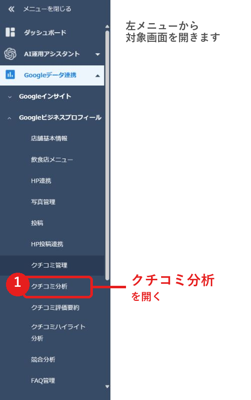
- 左メニューのGoogleデータ連携、Googleビジネスプロフィール配下から、クチコミ分析を開きます。
- 店舗ごとの分析は個店画面、複数店舗の比較はグループ画面で確認します。
FAQ画像: 個店のクチコミ分析画面
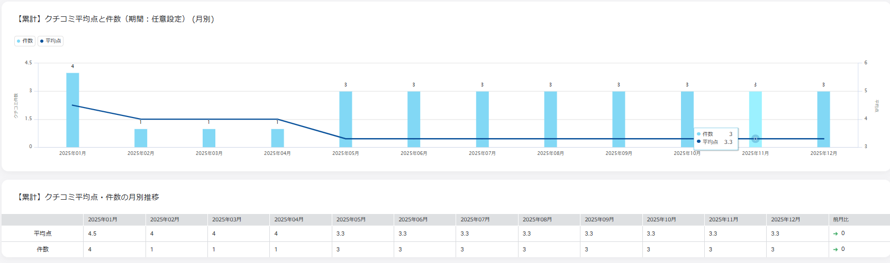
- 個店では、累計の平均点・件数と、その月に届いた最新の平均点・件数を確認します。
- グラフの下に表があり、細かい数値を確認できます。
2. クチコミ件数と評価点を見る
まず確認するのは、月ごとのクチコミ件数と平均点です。件数が増えている月は、来店数、声かけ、QR案内、SNS投稿などの施策とあわせて振り返ります。平均点が下がった月は、低評価の本文を読み、原因を現場で共有します。
FAQ画像: グループの全体サマリー
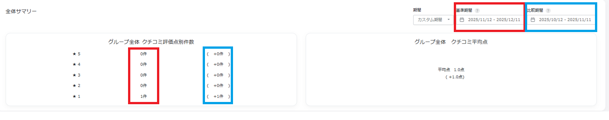
- グループ画面では、基準期間のクチコミ件数を評価別に確認できます。
- 青枠などの差分表示で、比較期間との変化を見ます。
FAQ画像: クチコミ件数・平均点の推移
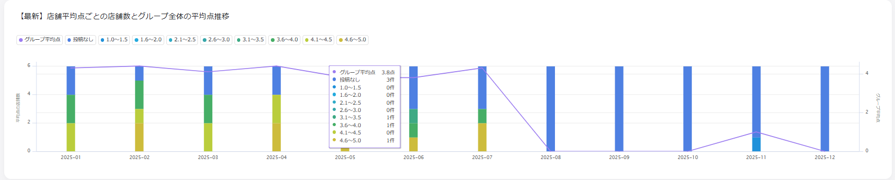
- 棒グラフで評価比率、折れ線で平均点の推移を確認します。
- 店舗数が多い場合、表は30店舗まで、グラフは10店舗まで表示され、ページを切り替えて確認します。
| 見る時のコツ クチコミ分析は、数字だけで良し悪しを決めないことが大切です。件数が増えた月、平均点が下がった月、星1や星2が増えた月は、その時期の営業内容、繁忙日、スタッフ体制、限定メニュー、予約状況と一緒に確認します。 |
|---|
3. クチコミ傾向分析を読む
クチコミ傾向分析では、登録したキーワードごとに、感情分析値、話題数、評価平均点、検出ワードを見ます。例えば、料理名、接客、価格、雰囲気、個室、ランチ、飲み放題などを登録しておくと、お客様がどのテーマで評価しているかを読みやすくなります。
FAQ画像: クチコミ傾向分析の見方
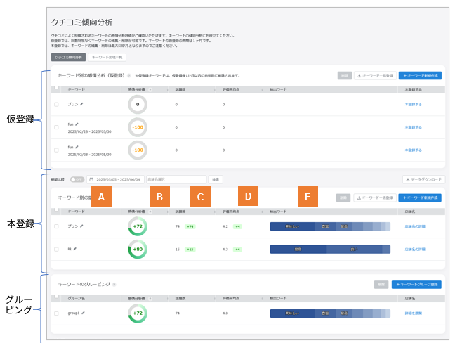
- Aは登録キーワード、Bは感情分析値、Cは話題数、Dは評価平均点、Eは検出ワードです。
- キーワードを押すと、該当するクチコミを画面で確認できます。
| 項目 | 意味 | 現場で見るポイント |
|---|---|---|
| 感情分析値 | ポジティブ・ネガティブの傾向 | 料理や接客への印象が上向きか下向きかを見る |
| 話題数 | その言葉がクチコミで話題に上がった数 | お客様がよく触れているテーマを知る |
| 評価平均点 | そのキーワードを含むクチコミの平均点 | 評価が低いテーマを改善候補にする |
| 検出ワード | キーワードに関連して出た形容詞など | おいしい、遅い、安い、高い、丁寧などの言葉を見る |
| 表示対象 キーワードと、そのキーワードに係る検出ワード上位3つのうち、いずれか1つ以上を含む最新50件のクチコミが表示対象です。画面で見えた言葉は、実際のクチコミ本文と合わせて確認します。 |
|---|
4. 分析キーワードを登録する
クチコミ傾向分析を使うには、分析したいキーワードを登録します。飲食店では、売りたい商品名、よく褒められる強み、改善したい接客テーマを登録しておくと使いやすくなります。
| 種類 | 用途 | 登録数・期間 | 注意点 |
|---|---|---|---|
| 仮登録 | 試しに分析する | 最大10件、1ヶ月で自動削除 | 継続する場合は本登録へ変更する |
| 本登録 | 継続的に分析する | 1店舗最大10キーワード | 削除・編集は月5回まで |
| グルーピング | 関連キーワードをまとめる | 1グループ最大10キーワード、5グループまで | 商品群や接客テーマごとにまとめる |
FAQ画像: キーワード仮登録
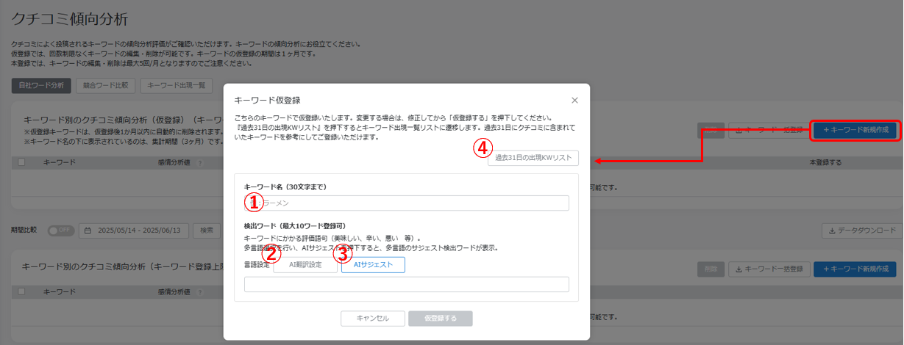
- 仮登録では、キーワード名を全角15文字以内で入力します。
- AI翻訳設定は最大3言語、AIサジェストでは候補から検出ワードを選べます。
- 過去31日の出現キーワードリストを参考に登録できます。
FAQ画像: キーワード本登録
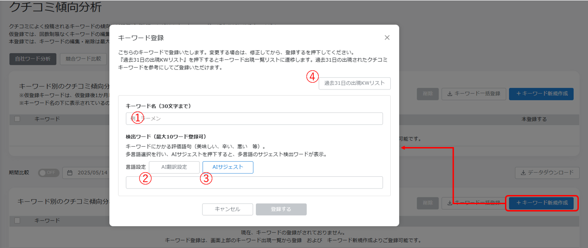
- 本登録は継続分析するキーワードに使います。
- 本登録後、翌朝のバッチ処理が完了するまで感情分析値、話題数、評価点、検出ワードが0または未表示になる場合があります。
- 本登録では過去2年間のデータを対象として集計します。
FAQ画像: キーワードのグルーピング
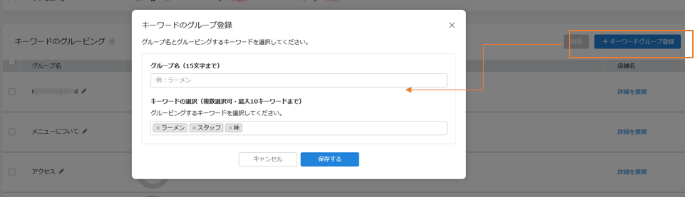
- グループ名を決め、本登録済みキーワードからまとめたいものを選びます。
- 詳細を展開すると、グループ内キーワードの分析結果を確認できます。
| おすすめの登録例 まずは、店名、看板商品、ランチ、接客、価格、雰囲気、予約、個室、テイクアウトなど、お店の集客や改善に直結する言葉から選びます。多く登録しすぎるより、月次で見て行動に移せる言葉に絞る方が続きます。 |
|---|
5. クチコミハイライト分析を見る
クチコミハイライト分析は、Googleビジネスプロフィールのレビュー欄上部に表示されるハイライトワードを取得して表示する機能です。お客様が自然に使っている言葉を見られるため、投稿文、店頭POP、メニュー説明にも活かせます。
FAQ画像: ハイライト分析の初期設定
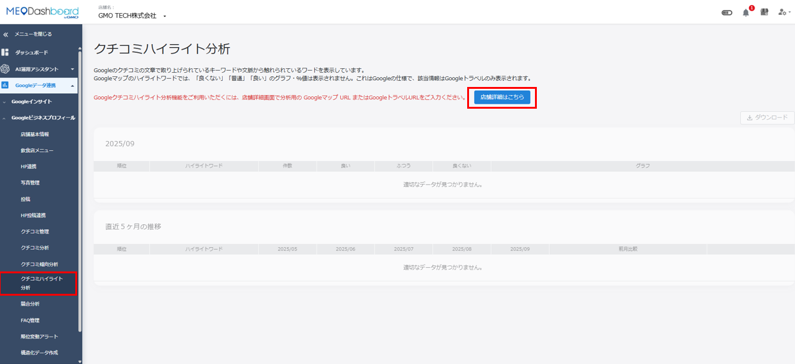
- この機能は、機能解放されている店舗で利用できます。
- 利用前に、対象店舗のGoogleマップURL、ホテルの場合はGoogleトラベルURLを設定します。
- URLを設定しないとデータ取得ができません。
FAQ画像: ハイライト分析の概要
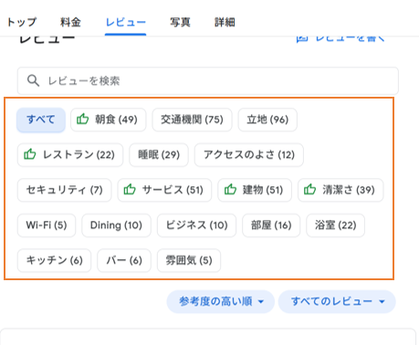
- ハイライトワードを押すと、そのワードに関連したクチコミが表示されます。
- 再度押すと、クチコミ表示を閉じます。
FAQ画像: 個店のハイライト分析画面
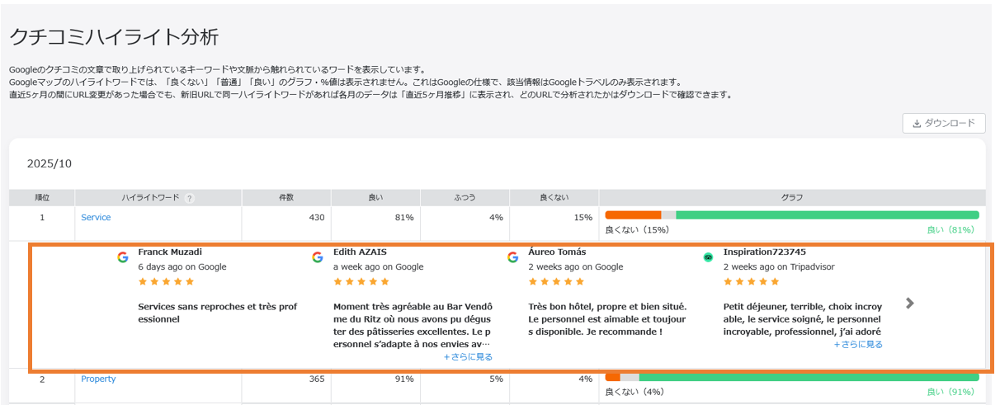
- 上段では前月のクチコミワードランキングを確認します。
- GoogleトラベルURLを設定した場合は、良い、ふつう、良くないの割合を確認できます。
- GoogleマップURLのみの場合、割合は取得できず、ハイライトワード件数のみになります。
| データ取得タイミング ハイライト分析は毎月1日に前月分を取得します。URL変更後の取得は、次回のデータ取得時に反映されます。過去の取得済みデータは更新されません。 |
|---|
6. データ出力と件数差異の見方
分析結果は、月次の振り返りやFoodLuckとの打ち合わせ用にダウンロードできます。ただし、単月と全期間では集計の意味が異なるため、件数が一致しないことがあります。
FAQ画像: ハイライトランキングのダウンロード
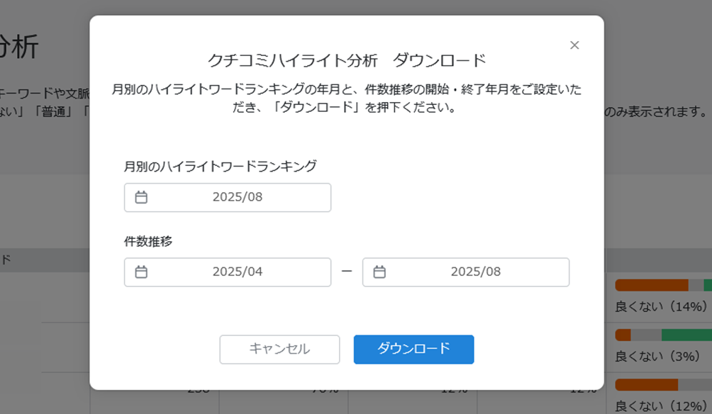
- 月別のハイライトランキングデータを出力できます。
- 件数推移のダウンロード期間は、開始月から終了月まで最大3年です。
- データがない場合は「ー」と表示されます。
FAQ画像: ダウンロード件数の差異
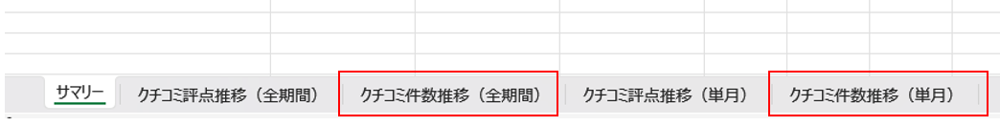
- 単月タブは、その月に新しく投稿されたクチコミ件数です。
- 全期間タブは、各月末時点でGoogleマップ上に公開されているクチコミ総数の推移です。
- 過去のクチコミがGoogle側で削除されると、全期間の前月差分が単月より少なくなる場合があります。
| 数字が違って見える時 数字が違う時は、まず集計定義を確認します。単月はその月に投稿された数、全期間は月末時点の公開総数の推移です。Google側で古いクチコミが削除されると、過去月の投稿数とは違う動きになります。 |
|---|
7. 競合ワード比較を見る
競合ワード比較では、競合店舗として設定した店舗と、自店舗のクチコミ内キーワードを比較できます。自店では出ていないが競合では出ている言葉、自店が強く出ている言葉を確認し、改善や発信のヒントにします。
FAQ画像: 競合店舗の設定
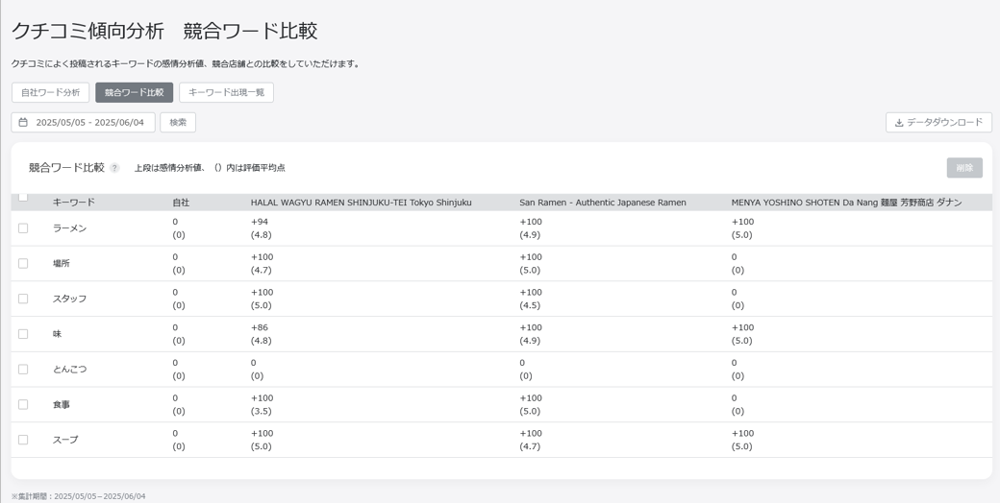
- 右上のビルマーク、店舗から対象店舗を選び、競合店舗を登録します。
- 競合店舗名、住所、電話番号を入力します。GBP URLは必須ではありませんが、入力するとGoogleマップ上の競合店舗を見つけやすくなります。
FAQ画像: 競合ワード比較
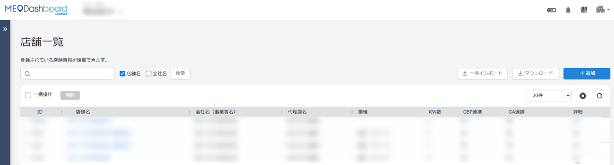
- 自店舗と競合3店舗まで比較できます。
- 更新は週1回で、FAQでは毎週火曜日に取得し、水曜日の朝に反映されると案内されています。
| 飲食店での使い方 競合で多い言葉が自店で少ない場合は、実際に弱いのか、伝え方が足りないのかを分けて考えます。例えば『個室』『ランチ』『接客』『コスパ』『雰囲気』などの言葉は、投稿、写真、メニュー説明、店頭案内に反映できます。 |
|---|
8. 月次で見るチェックリスト
□ 前月のクチコミ件数と平均点を確認した
□ 星1から星3のクチコミ本文を読み、原因を1つ以上メモした
□ 増えた褒め言葉を、Google投稿、SNS、メニュー説明に活かす内容へ変換した
□ 登録キーワードの感情分析値、話題数、評価平均点を確認した
□ 仮登録キーワードで継続して見たいものを本登録へ変更した
□ ハイライトワードの上位を確認し、お客様が実際に使っている言葉を把握した
□ 競合ワード比較で、自店に足りない言葉、強く出ている言葉を確認した
□ 数字が合わない時は、単月と全期間の定義、Google側の削除影響を確認した
| 現場への落とし込み 分析は、見るだけでは売上につながりません。良い言葉は伸ばす、悪い言葉は原因を潰す、競合にあって自店にない言葉は発信や商品改善に使う。月1回、この3つだけでも決めると、クチコミ分析が現場改善の道具になります。 |
|---|
9. この資料に反映したFAQ記事
以下のFAQ記事を確認し、飲食店の現場で必要な内容を本文へ統合しました。キーワード登録など設定に関わる項目は、FoodLuck側で確認しながら進める項目としても使えるように整理しています。
| No. | FAQ記事 | 本文での反映先 |
|---|---|---|
| 1 | キーワード「仮登録」から「本登録」への変更方法（グループ） | 4. 分析キーワードを登録する |
| 2 | キーワード「仮登録」から「本登録」への変更方法（個店） | 4. 分析キーワードを登録する |
| 3 | キーワード「仮登録」方法（グループ） | 4. 分析キーワードを登録する |
| 4 | キーワード「仮登録」方法（個店） | 4. 分析キーワードを登録する |
| 5 | キーワード「本登録」方法（グループ） | 4. 分析キーワードを登録する |
| 6 | キーワード「本登録」方法（個店） | 4. 分析キーワードを登録する |
| 7 | キーワードのグルーピング（グループ） | 4. 分析キーワードを登録する |
| 8 | キーワードのグルーピング（個店） | 4. 分析キーワードを登録する |
| 9 | クチコミハイライトランキングのデータ出力（ダウンロード） | 5-6. ハイライト分析・出力 |
| 10 | クチコミハイライト分析の初期設定 | 5-6. ハイライト分析・出力 |
| 11 | クチコミハイライト分析機能の概要 | 5-6. ハイライト分析・出力 |
| 12 | クチコミハイライト分析画面（グループ） | 5-6. ハイライト分析・出力 |
| 13 | クチコミハイライト分析画面（個店） | 5-6. ハイライト分析・出力 |
| 14 | クチコミ傾向分析 概要 | 3. クチコミ傾向分析を読む |
| 15 | クチコミ分析にてダウンロードしたクチコミ数の差異について | 6. データ出力と件数差異 |
| 16 | クチコミ分析画面（グループ） | 2. クチコミ件数と評価点を見る |
| 17 | クチコミ分析画面（個店） | 2. クチコミ件数と評価点を見る |
| 18 | 競合ワード比較 | 7. 競合ワード比較を見る |